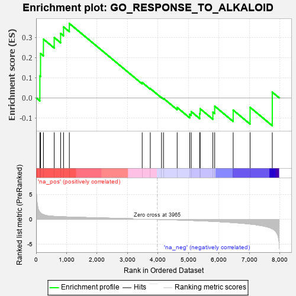
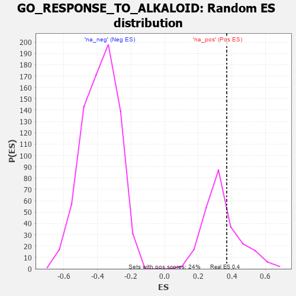

| | | Dataset | 7d |
| Phenotype | NoPhenotypeAvailable |
| Upregulated in class | na_pos |
| GeneSet | GO_RESPONSE_TO_ALKALOID |
| Enrichment Score (ES) | 0.3696176 |
| Normalized Enrichment Score (NES) | 1.0812371 |
| Nominal p-value | 0.29218107 |
| FDR q-value | 0.6535576 |
| FWER p-Value | 1.0 |
Table: GSEA Results Summary

Fig 1: Enrichment plot: GO_RESPONSE_TO_ALKALOID
Profile of the Running ES Score & Positions of GeneSet Members on the Rank Ordered List
| PROBE | GENE SYMBOL | GENE_TITLE | RANK IN GENE LIST | RANK METRIC SCORE | RUNNING ES | CORE ENRICHMENT | | 1 | ADCY8 | | | 124 | 1.418 | 0.1088 | Yes |
| 2 | CASP6 | | | 145 | 1.300 | 0.2203 | Yes |
| 3 | SRSF9 | | | 240 | 0.950 | 0.2919 | Yes |
| 4 | PITX3 | | | 594 | 0.596 | 0.2998 | Yes |
| 5 | BLM | | | 804 | 0.531 | 0.3201 | Yes |
| 6 | HDAC5 | | | 900 | 0.506 | 0.3525 | Yes |
| 7 | RAD51 | | | 1090 | 0.466 | 0.3696 | Yes |
| 8 | CDK5 | | | 3480 | 0.080 | 0.0762 | No |
| 9 | HTR1B | | | 3745 | 0.035 | 0.0460 | No |
| 10 | MTOR | | | 4114 | -0.025 | 0.0019 | No |
| 11 | PDX1 | | | 4179 | -0.038 | -0.0028 | No |
| 12 | SDK1 | | | 4627 | -0.124 | -0.0481 | No |
| 13 | CASP7 | | | 5038 | -0.206 | -0.0816 | No |
| 14 | DRD2 | | | 5088 | -0.221 | -0.0684 | No |
| 15 | DHX15 | | | 5366 | -0.288 | -0.0779 | No |
| 16 | GRIN1 | | | 5381 | -0.291 | -0.0542 | No |
| 17 | ADA | | | 5798 | -0.405 | -0.0709 | No |
| 18 | ATG7 | | | 5858 | -0.420 | -0.0415 | No |
| 19 | SRR | | | 6464 | -0.646 | -0.0609 | No |
| 20 | DDC | | | 7019 | -0.950 | -0.0473 | No |
| 21 | CASP3 | | | 7747 | -1.902 | 0.0282 | No |
Table: GSEA details [plain text format]

Fig 2: GO_RESPONSE_TO_ALKALOID: Random ES distribution
Gene set null distribution of ES for GO_RESPONSE_TO_ALKALOID